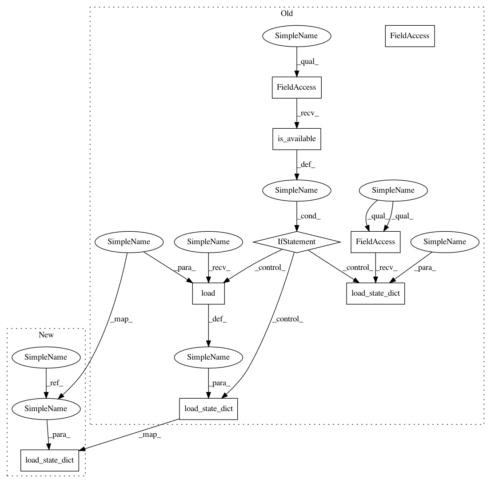

4fb281b7f9f5e549e29addd5641eac007c5ed385,autokeras/pretrained/face_detector.py,FaceDetector,__init__,#FaceDetector#,276
Before Change
pnet, rnet, onet = self.local_paths[0], self.local_paths[1], self.local_paths[2]
self.pnet_detector = PNet()
if torch.cuda.is_available():
self.pnet_detector.load_state_dict(torch.load(pnet))
else:
self.pnet_detector.load_state_dict(torch.load(pnet, map_location=lambda storage, loc: storage))
self.pnet_detector = self.pnet_detector.to(self.device)
self.pnet_detector.eval()
self.rnet_detector = RNet()
After Change
pnet, rnet, onet = (torch.load(path, map_location=lambda storage, loc: storage) for path in self.local_paths)
self.pnet_detector = PNet()
self.pnet_detector.load_state_dict(pnet)
self.pnet_detector = self.pnet_detector.to(self.device)
self.pnet_detector.eval()
self.rnet_detector = RNet()
In pattern: SUPERPATTERN
Frequency: 3
Non-data size: 9
Instances
Project Name: keras-team/autokeras
Commit Name: 4fb281b7f9f5e549e29addd5641eac007c5ed385
Time: 2019-02-09
Author: jhfjhfj1@gmail.com
File Name: autokeras/pretrained/face_detector.py
Class Name: FaceDetector
Method Name: __init__
Project Name: keras-team/autokeras
Commit Name: 4fb281b7f9f5e549e29addd5641eac007c5ed385
Time: 2019-02-09
Author: jhfjhfj1@gmail.com
File Name: autokeras/pretrained/face_detector.py
Class Name: FaceDetector
Method Name: __init__